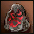
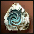
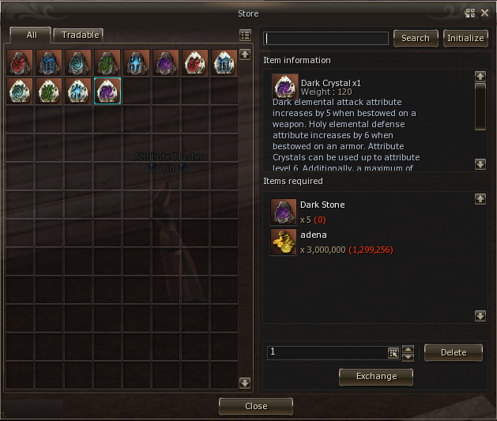
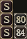
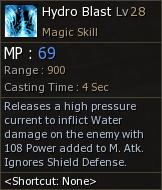
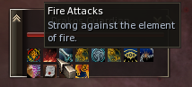

Elemento

¿Qué es el elemento? 
A partir de Hellbound, se implementa una nueva metodología para incrementar el daño y la defensa de nuestros personajes, tanto en PVP como en PVE, esto se logra colocando piedras de elemento en las armas o armaduras.
Hay 3 grupos de 2 elementos cada uno, los cuales se toman como el contrario del mismo, en total son 6:
Fire / Water
Earth / Wind
Dark / Holy
¿Qué elemento puedo agregarle a mi arma o armadura?
Hay dos tipos de piedras de elemento, las stones que se consiguen mayormente por drop de npc y los crystals  que se consiguen de dos maneras, en gracia, activando el evento de seed of destruction o anihilation, de los cuales se pueden recolectar fragmentos y por medio de un recipe armar los crystales (Se creará la guía en un futuro), y la otra menera, en HighFive se agrega la opción en los npc de rune (Yang) y aden (Yin) de intercambiar 5 piedras comunes + adena por un crystal. En estos mismos npc se pueden intercambiar las piedras comunes por su contrario elemento sin costo alguno.
Armas
El elemento que se le puede agregar a las armas es uno solo, el cual afecta a las habilidades (con el mismo tipo de elemento) y a los autoataques. Colocando una piedra fire se incrementará el elemento del arma en 25 puntos en daño de fuego, las siguientes que agregues, irán incrementando de a 5 puntos por cada piedra agregada, hasta 150. Después de eso tendremos que agregar cristales de elemento, los cuales seguirán subiendo de a 5 puntos hasta un máximo de 300.
Armaduras
El sistema de armaduras es completamente distinto al de las armas, uno agrega un elemento de un grupo y le da el contrario al mismo, un ejemplo seria que agregamos una piedra Holy a nuestra parte de armadura y nos dará 6 de resistencia Dark.
Cada piedra de elemento nos incrementará 6 de elemento hasta un máximo de 60, después de eso tendremos que utilizar cristales que subirán hasta un máximo de 120 de elemento en total.
HighFive
En H5 se nos permite tener tres elementos por parte de armadura, limitándose a un solo elemento por grupo, esto quiere decir que si agregamos elemento fire para defender Water, no podremos agregarle piedras Water para defender fire, se limita a uno solo de cada grupo.
Gracia
En gracia se nos limita a un solo elemento por parte de armadura, esto quiere decir que si agregamos Earth nos dará resistencia Wind y no se podrá agregar otro elemento.
¿Qué Chances de entrar tienen esas piedras?
Dependiendo del grado del arma (s, s80, s84) las piedras tienen distinta chance de entrar.
| Grado  | Piedra/stone | Crystal |
|---|---|---|
| S | 50% | 30% |
| S80 | 50% | 40% |
| S84 | 50%% | 50% |
*El tipo de arma, armadura o nivel del personaje no afecta en la chance.
*Hay otros dos tipos de elementos para subir más de 300 llamadas jewel of energy que no están implementadas oficialmente, dependen del servidor y de qué tan java sea.
¿Cómo afecta a mi daño el elemento?
El elemento es un incremento porcentual de tu daño total sobre el objetivo, que varía dependiendo de la resistencia del objetivo.
Daño elemental HighFive
| Elemento total | Incremento de daño | Elemento total | Incremento de daño | Elemento total | Incremento de daño |
|---|---|---|---|---|---|
| -1 | -0.30% | 20 | 7.50% | 41 | 16.90% |
| 0 | Daño Base | 21 | 8.1% | 42 | 17.5% |
| 1 | 0.3% | 22 | 8.4% | 43 | 18.1% |
| 2 | 0.6% | 23 | 8.7% | 44 | 18.4% |
| 3 | 0.9% | 24 | 9.3% | 45 | 19% |
| 4 | 1.5% | 25 | 9.6% | 46 a 149 | 19.6% |
| 5 | 1.8% | 26 | 10.3% | 150 a 299 | 39.6% |
| 6 | 2.1% | 27 | 10.6% | 300 | 69.6% |
| 7 | 2.4% | 28 | 10.9% | ||
| 8 | 2.7% | 29 | 11.5% | ||
| 9 | 3.3% | 30 | 11.8% | ||
| 10 | 3.6% | 31 | 12.4% | ||
| 11 | 3.9% | 32 | 12.7% | ||
| 12 | 4.2% | 33 | 13.3% | ||
| 13 | 4.8% | 34 | 13.6% | ||
| 14 | 5.1% | 35 | 14.2% | ||
| 15 | 5.4% | 36 | 14.8% | ||
| 16 | 6% | 37 | 15.1% | ||
| 17 | 6.3% | 38 | 15.7% | ||
| 18 | 6.6% | 39 | 16% | ||
| 19 | 7.2% | 40 | 16.6% |
Con respecto a las habilidades, si uno está pegando con Hydro Blast con una Arcane mace con 25 de Water, estarías pegando en total 45 de elemento Water, ya que esa skill ya tiene de base 20 de elemento water y el incremento de daño sería de un 19%.
¿Puedo sacarle el elemento a mi arma/armadura?
Si, en los NPC de rune (Yang) y aden (Yin), se encuentra la opción de remover el elemento de las armaduras o armas.
Preguntas frecuentes
¿Si yo tengo 800 de elemento, cuánto le pego al objetivo?
El máximo de daño incrementado por elemento es de 300 puntos, esto quiere decir que si el objetivo tiene 10 de algún elemento y vos tenes 380 del mismo, seguís pegando el máximo de 300 que es un aumento de 69.6% de daño.
¿Si mi skill pega con Dark y tengo un arma con Fire, le pego con fire?
No, tu skill pegara con solo la base del dark e ignorará el elemento del arma, la única forma de que pegues con ese elemento sería pegando autoataques.
¿Mi habilidad no tiene elemento, le afecta el elemento del arma?
No, las habilidades que no tienen elemento no les afecta el del arma, solo puede afectarle en algunos casos donde esa misma habilidad se puede enchantear por elemento, al tener daño de elemento agregado, cuenta el del arma.
¿Cómo se a que elemento son débiles los NPC?
La mayoría de los npc tienen su ataque destacado en la barra de pasivas del mismo, en esos casos, son débiles al elemento contrario, en el siguiente ejemplo se ve que el npc tiene ataque fuerte de fire, eso significa que es débil a water, igual es recomendable buscar las resistencias y ataques de los npc en bases de datos u otras páginas.
Hay casos específicos como los undead, que aunque no lo diga, son débiles a Holy.

¿Si tengo un arma con 300 de Fire y el buff holy weapon al mismo tiempo, con cual pego?
Si estas pegando con un skill, pegaría con el elemento del skill (si es que coinciden), si es por autoataques, pega con el que más tengas, en este caso Fire.